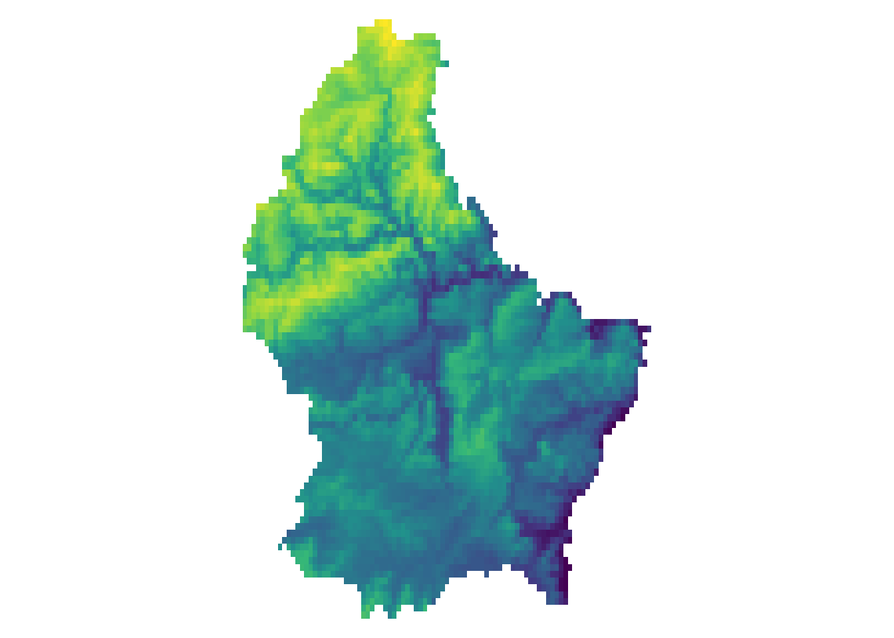
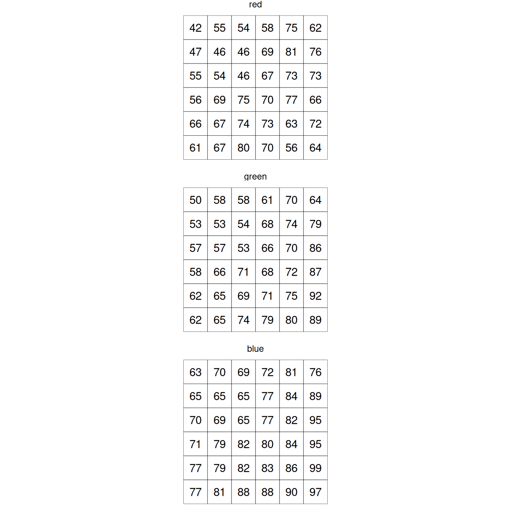
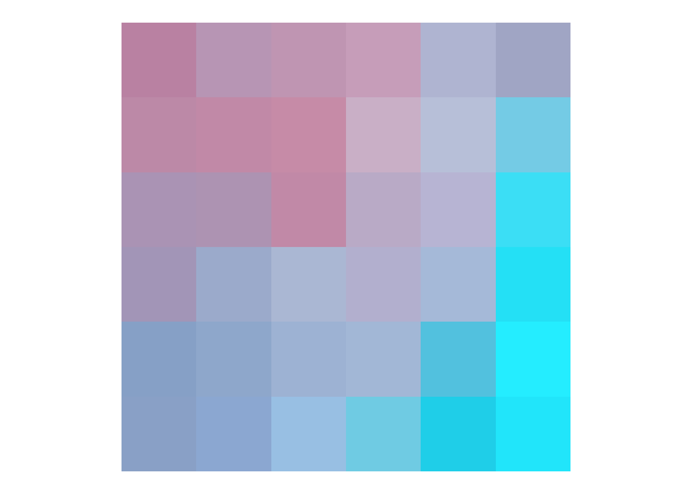

Imagery Data
Images are Rasters
- The spatial raster data model represents the world with the continuous grid of cells (a.k.a. pixels)
- This data model often refers to so-called regular grids, in which each cell has the same, constant size
- Through its inherent model, this data naturally fits into the wide data structure
- This connects directly to the previous lesson on wide vs long data
- Emphasize that raster data is inherently a grid/matrix structure
- Each pixel has a fixed location - this is why wide format makes sense
- Regular grids are the foundation of most remote sensing data
- We will focus on the regular grids only. However, several other types of grids exist, including rotated, sheared, rectilinear, and curvilinear grids (see Chapter 1 of Pebesma and Bivand (2023)).


Types of raster data
- Raster datasets usually represent continuous phenomena such as elevation, temperature, population density or spectral data.
- Discrete features such as soil or land-cover classes can also be represented in the raster data model
- Distinguish between continuous (elevation, temperature) and discrete (land cover classes) data
- Both can be stored in raster format, but analysis approaches differ
- Most remote sensing applications deal with continuous spectral values
- Discrete classifications often result from processing continuous data
A simple example: Elevation
[,1] [,2] [,3] [,4] [,5] [,6]
[1,] 275 282 373 342 357 326
[2,] 230 318 316 351 345 346
[3,] 164 337 258 342 363 350
[4,] 168 337 261 354 358 364
[5,] 202 322 250 380 362 373
[6,] NA 310 270 361 370 363
[7,] NA 277 310 291 375 365
[8,] NA 181 325 264 381 373
[9,] NA NA 313 264 370 384
[10,] NA NA 298 285 370 380
[11,] 402 NA 333 293 356 382A more complex example: Spectral data
- Typically, RS imagery consists of more than 1 band
- In this case, the data is stored in a 3 dimensional array (where band is the 3rd-dimension)
- A RS image can contain any number of bands.
- The most well known type of RS imagery consists of 3 Bands from the red, blue and green spectrum
- Move from 2D (single band) to 3D (multi-band) concept
- Each band captures different wavelengths of electromagnetic spectrum
- RGB is familiar to students - good starting point
- Modern satellites can have hundreds of bands (hyperspectral)

Each band is a 2D matrix

Multispectral Datasets
- Multiband datasets usually capture different parts of the EM spectrum
- E.g. the Landsat image from the previous example has 6 bands capturing the following wavelengths:
- Band 1: Blue (0.45 - 0.52 µm)
- Band 2: Green (0.52 - 0.60 µm)
- Band 3: Red (0.63 - 0.69 µm)
- Band 4: Near-Infrared (0.77 - 0.90 µm)
- Band 5: Short-wave Infrared (1.55 - 1.75 µm)
- Band 7: Mid-Infrared (2.08 - 2.35 µm)
- Point out that Band 6 (thermal) is missing from this list - was not included in this dataset
- Each band serves different purposes: visible for true color, NIR for vegetation health, SWIR for moisture
- These wavelength ranges are carefully chosen based on atmospheric windows and target phenomena
- Students will learn to use different band combinations for different applications
NirGB Image


Representations of multispectral data
- A true color image is created by using the Red (3), Green (2) and Blue (1) Band and mapping these to RGB
- A false color image is created by mapping other bands to RGB
- True color: what our eyes would see if we were there
- False color: reveals information not visible to human eye
- NIR false color is very common - vegetation appears red because it reflects strongly in NIR
- Different false color combinations highlight different features (water, urban areas, etc.)